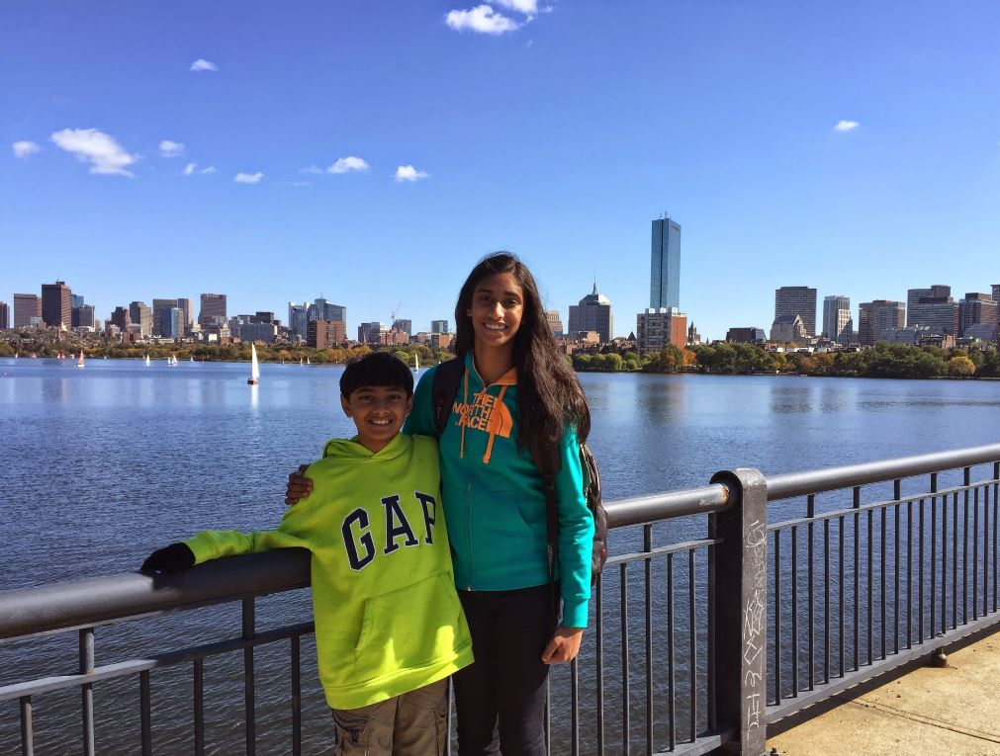
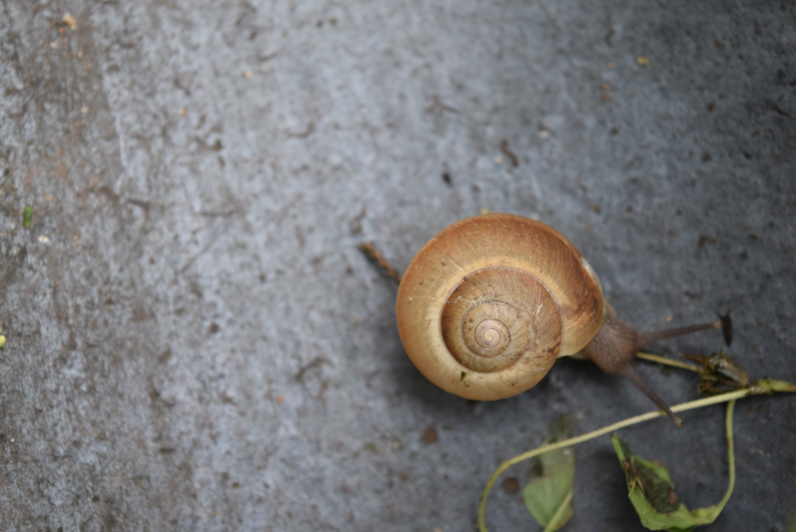
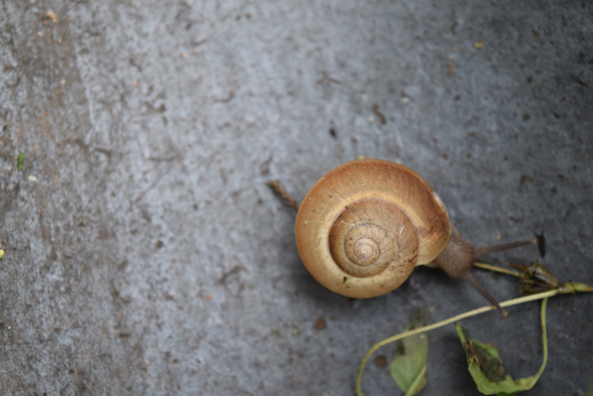
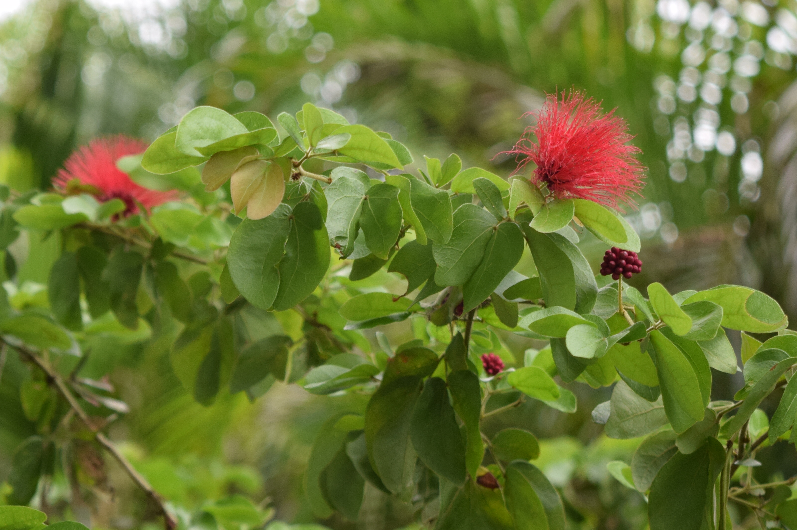
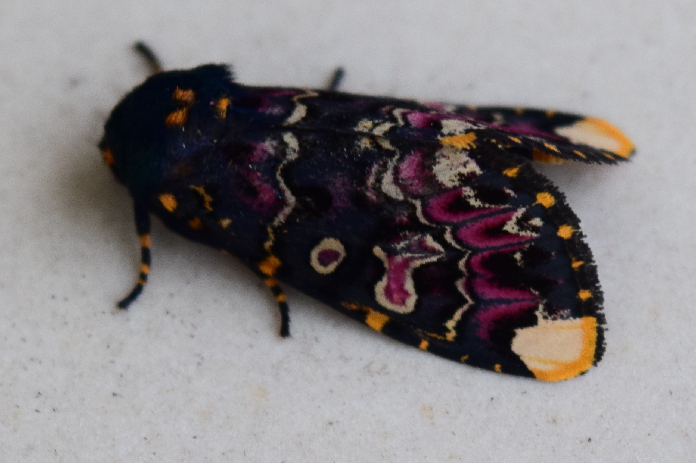
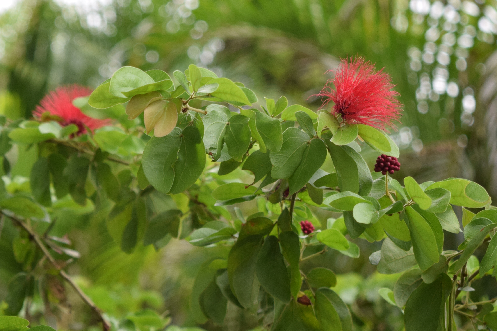
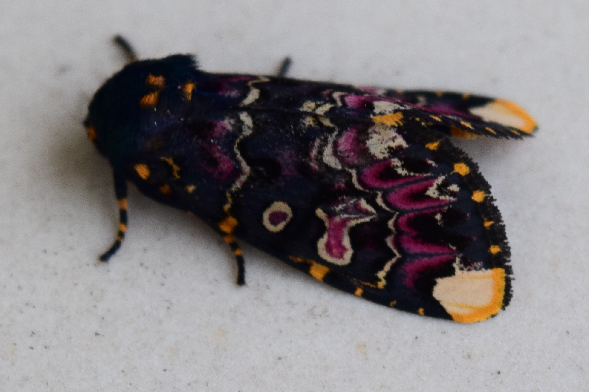

I am a 16 year old Junior at Mass Academy of Math and Science and an avid
enthusiast of Coldplay, The Flash, and pizza.

That's me and my brother.
I live in Tyngsboro, MA, but because no one knows where
that is, it is near Lowell, MA. If you don't know where Lowell is
either, then you should probably look it up on
Google Maps.
My sending school was Chelmsford High School, which is located in
Chelmsford, MA, a town neighboring Tyngsboro. I loved CHS
because of the faculty, the sense of community, and of course, my
friends. Leaving Chelmsford High was tough because it meant I would
have to start over. Losing not only my friends, but the connections
I had with many of my teachers made me feel sad. Being the risk
taker I was, I wanted to challenge myself and try something new.
The end result was my enrollment into Mass Academy.

 

  
 